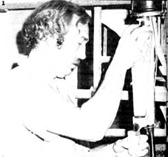
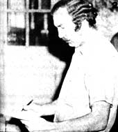
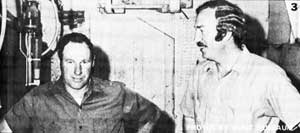

Three years ago, Robert Richardson gave up his career as a teacher, moved to the country... and stepped right into a unique $15- to $35-per-day (plus meals) job that few back-to-the-landers-it seems-have heard of. Here, Bob tells us all about his novel-and profitable-line of work.
If you already live in the country and need a good, steady source of extra income-or if you've made up your mind to move to a rural area but you don't know how you'll earn a living once you get there-I know at least one line of employment that you should check out. It'll let you [1] meet people on equal terms, [2] have the sunniest hours of the day off, and [3] learn a lot about dairy animals in a short time.
Why not, in other words, think about becoming a milk tester-or "field(wo)man"-for the Dairy Herd Improvement Association?
The DHIA fieldman helps dairy farmers keep accurate milk production records on each of the animals (usually cows, but sometimes goats) in their herds. More specifically, this is how you'll spend your time if you do land a job as a fieldman:
In the late afternoon, you'll drive out to a farm and-unless your host prefers to eat after milking, which is sometimes the case-sit down with the dairy farmer's family and eat supper. Once this formality has been satisfactorily taken care of, you'll accompany the dairyman, his wife, and their children (if they are to help) out to the barn for the evening milking.
Then, as each cow is milked, you'll weigh her output and record the weight beside the animal's name or number on the "barnsheet" you've brought along for this purpose. You'll also collect and tag a small sample of each cow's milk for a butterfat analysis that will be conducted later.
The next morning, you'll return to the same farm and-except for eating breakfast this time instead of supper-repeat the procedure. (A few years ago, it was common practice for milk testers to stay overnight on the farms they visited. One woman who works in our association still does this, since most of the farms she covers are located some distance from her home . . . but her situation is now an exception to the rule.)
After you've finished breakfast and the cows have been milked, you'll return to the DHIA laboratory you work out of and drop off the milk samples and barnsheets. And that's it . . . until about six hours later, when-in the late afternoon-you'll visit another farm.
If all this sounds pleasant and easy, it is. And you don't need prior dairy experience to land one of these jobs! My "qualifications" before becoming a fieldman were threefold: [1] years before, as a youngster, I had milked a cow that my dad kept, [2] I had once raised a dairy heifer as a 4-H project, and [3] I answered the ad. And, except for the fact that they gave me enough confidence to apply for the job, the first two points actually were irrelevant.
Believe me, this job's been done-and done well-by many people who, until they became fieldmen, knew nothing about dairy work. One of my co-workers-a man who's been testing milk for the last 14 of his 74 years-came to this occupation straight from a long stint with a dog track in Florida. Before that, he'd been a chauffeur in Chicago.
So don't let the fact that you've never seen the inside of a barn before (if that's the case) intimidate you. If you can pour milk out of a cup, you can become a DHIA milk tester!
Perhaps you're wondering (and I don't blame you) just why anyone should be paid to go around and collect these samples of milk. The answer is simple. All cows eat a lot, but not all cows give a lot of milk. And a dairy farmer-if he's to make well-founded decisions about the feeding and breeding of his herd-needs to know exactly which cows are the "big producers". (Finding heavy milkers isn't as easy as you might think, because you can't see their milk as it flows from the teat cups of a modern automatic milker through a pipeline to the milkhouse cooling tank. All you know for sure is that the cow stood there with the milkers on her for a certain length of time . . . which doesn't necessarily say anything about how much milk the old gal gave!)
By having his herd tested, then, a dairy farmer is able to learn precisely how much milk each of his animals produces from month to month and how much butterfat that flow contains. (The higher the fat content, the more the dairyman is paidper pound-for the milk.) This information-in turn-helps the farmer to decide such things as how much feed a given cow should receive, and to what bull she should be bred. (The finer points of feeding and breeding are, of course, quite complicated. In general, though, a heavy milker usually needs and gets a heavy ration of grain . . . while an animal that produces a heavy flow of milk with a consistently low butterfat content will probably be bred to a bull that has a record of improving butterfat production in his offspring.)
As you can see, the DHIA testing program gives dairymen a good deal of valuable information that can help them make more money. Your job is to pick up a few bucks for yourself by helping to provide that information.
The DHIA testing program is sponsored by the Department of Agriculture and is affiliated with the Agricultural Extension Service in each state. Hence, if you want to check out your chances of obtaining employment as a fieldman, your best bet is to call or write the County Agricultural Extension Agent in the county where you live (or intend to live). He'll know about the DHIA program and, in fact may be the person who manages it and hires the fieldmen in your area. And if he doesn't, he'll know who does.
Once you've been hired an experienced fieldman will take you out on his or her route a time or two and quickly teach you the essentials of the job. Then-after you've worked a couple of weeks on your own and seen what the job entails (and you're sure you want to stay with it awhile)-your local association will send you to fieldman's school (probably at the land grant university in your state) for a week of instruction. There, you'll learn about DHIA work in greater detail and be given a broad introduction to the care, feeding, and breeding of dairy animals . . . after which you'll return to the area in which you live to carry out your duties as an experienced, trained milk tester.
You won't accumulate a fortune as a fieldman . . . but then, you won't exactly starve, either. Rates of pay vary from one local association to another and are generally higher in the Northeast and Far West than the Midwest or South. Here in Wisconsin (where rates are about average), a typical wage is $10 per day-your "basic supervision" fee-plus 11 cents per cow . . . which means that a fifty-cow herd can net you $15.50 (plus two homecooked meals) for a day's work. And that's just the beginning.
You see, owner-samplers -dairymen who aren't interested in having official DHIA test records, but who DO want to know how much milk each of their cows produce (and how much butterfat is in that milk)-can easily double a fieldman's wages.
Here's how it works: Let's say you have three owner-samplers (with herds of 30, 60, and 90 cows) on your day's route in addition to the fifty-cow herd mentioned above . . . not an unlikely scenario. OK, on your way out to perform evening tests you'll leave a barnsheet-and a box of sample bottles-in each owner-sampler's milkhouse. Then, in the morning-on your way to the lab-you'll pick up the sample bottles that you dropped off the night before, bring them in for analysis, and receive a tidy 11 cents per cow (but no supervision fee) for doing so. Which makes your day's wages $35.30 . . . not $15.50. (Quite a boost, considering that you've hardly gone out of your way to earn it.)
Between basic supervision fees and owner-sampler income, then, you should have no trouble making about $400 to $700 per month as a fieldman (assuming you work five days a week) . . . not counting the money you'll save by eating away from home most of the time!
Although the DHIA testing program is sponsored by the Department of Agriculture, it's actually organized and run on a local level by participating dairymen, who elect a governing board from among their own ranks. Consequently, as a DHIA milk tester, you work for the dairymen themselves . (You're not an inspector or a salesman, so your presence on a farm is never an imposition or an unwanted intrusion.) In effect, the dairyman is inviting you to his farm once a month to work with him .
This-in turn-provides the basis for one of the finest "fringe benefits" of the job: personal friendship. By getting to know the farmers you work with, you'll establish enduring personal relationships . . . and-at the same time-acquire something else that every newcomer to country life desperately needs: information.
Most dairymen like their work and like to talk about it. (Whether or not you've got the gift of gab, the words will flow . . . believe me!) So use that fact to your advantage by asking all those questions you have about dairy cattle and other farming subjects . . . you're sure to get plenty of free professional advice!
Also, if you're looking to buy a calf-or some hay for use as mulch in the garden-by all means ask. You're close to the source of both. And are you in the market for a piece of land? One of the dairymen you work with may have acreage to sell, or know of a neighbor who does. (And if you're looking for a dog or cat, you'll have to learn to say no unless you want dozens of them!)
DHIA field work-as you can see-gives you direct and easy access to the ordinary activities and daily flow of country life. Which is something you can't say about very many other jobs.
One nice feature of this line of work is that it leaves you free during the middle of the day (from 10:00 or 10:30 a.m. to 4:30 or so) to raise a garden, build a house, write a book, or do anything else you want. There's also a good chance that you can adjust the length of your workweek to fit your economic circumstances. For instance, some fieldmen-who look upon milk testing as a source of both income and social life-like to work seven days a week . . . while I prefer to go out only three or four.
Then too, one fieldman's job could easily be divided between two people, each of whom takes on half the usual 20 to 24 herds to be tested per month. It shouldn't be too difficult to find an association manager who'll agree to such an arrangement. If he needs help and thinks you and your partner will be dependable, you'll probably get the job . . . because in most areas, good fieldmen are hard to find and the turnover is high. (Thus, even as a job applicant you can deal from a position of some strength when making such a proposal.)
The fact that fieldmen tend to come and go may suggest to you that the job has its disadvantages . . . and you're right.
The most obvious drawback-ironically-is the work schedule itself. Getting up before the roosters each morning isn't everybody's idea of fun . . . despite the fact that the world's always fresh-and often glorious-just as the sun comes over the horizon. Nonetheless, farmers do milk their cows early in the morning and early in the evening (usually at 6:00 and 6:00), and you have to be there, even if the roads are bad and it's 25° below zero.
DHIA field work also has a disruptive effect on family life. Of course, you may-if you live alone-relish eating breakfast and supper at somebody else's table all the time . . . but if you live with family or friends, you-and they-may come to regret your routine absence at mealtime.
Then too, one of these field jobs can put a real damper on your nighttime activities. You won't be able to get started on anything before 8:00 or 8:30 p.m. And you'll have to curtail each night out mighty early if you want to wake up feeling rested before dawn the following morning.
One more thing: Cows are veritable volcanoes of organic, highly odorous activity. In other words, they smell. You can get used to this, of course, if you want to . . . but not everyone wants to.
Still and all, if you're looking for something that'll allow you to [1] provide an important service, [2] meet a lot of interesting people, [3] learn a good deal about farm life, and [4] earn a livable wage in the process, you'd have to search far and wide-in my opinion-to beat DHIA field work. (Especially if you enjoy eating out!)
Come to think of it, I'd probably have moved to the country a lot sooner if I'd known-before I got here-that there was a job waiting for me as a DHIA milk tester!
|
 PHOTO 1: Author Bob Richardson. collects a milk sample that will later be tested for butterfat content. |
 PHOTO 2: Bob records the weight of a cow's milk on a barnsheet. |
 PHOTO 3: Richardson, a former schoolteacher, has learned a lot about farming from Lowell Heim and the other dairymen with whom he works. |